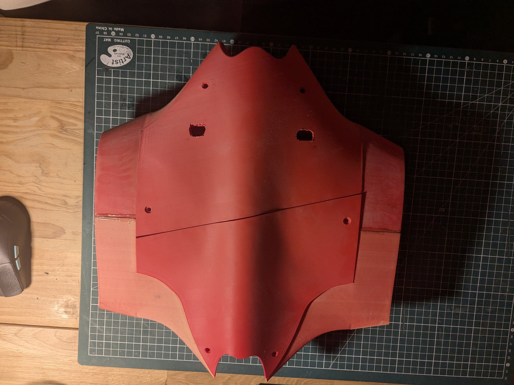
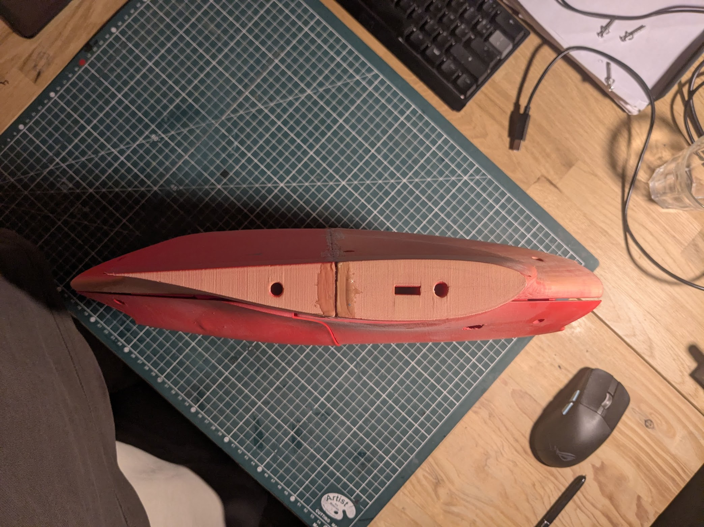
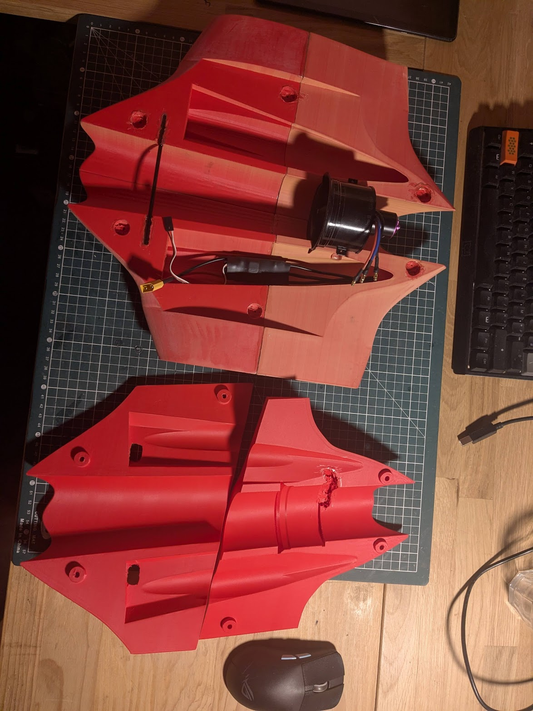
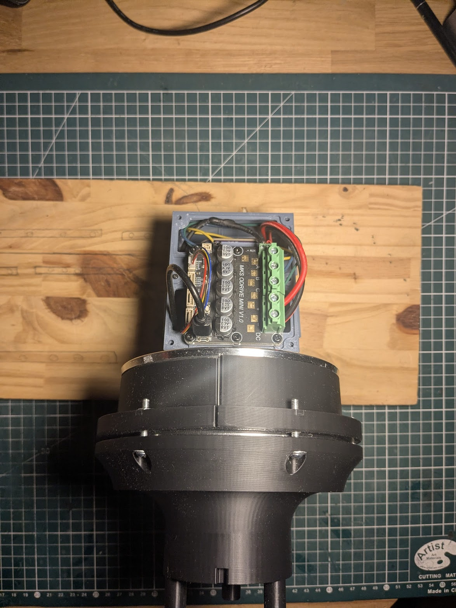
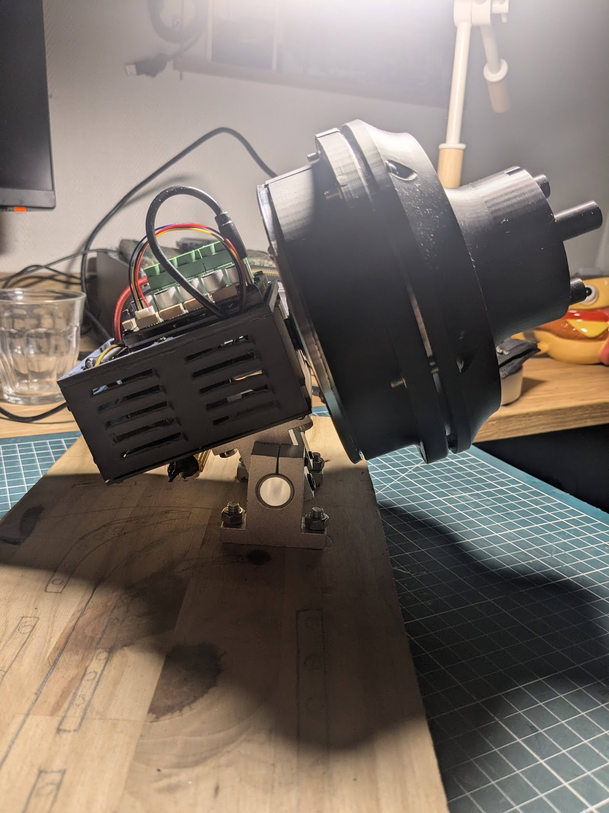
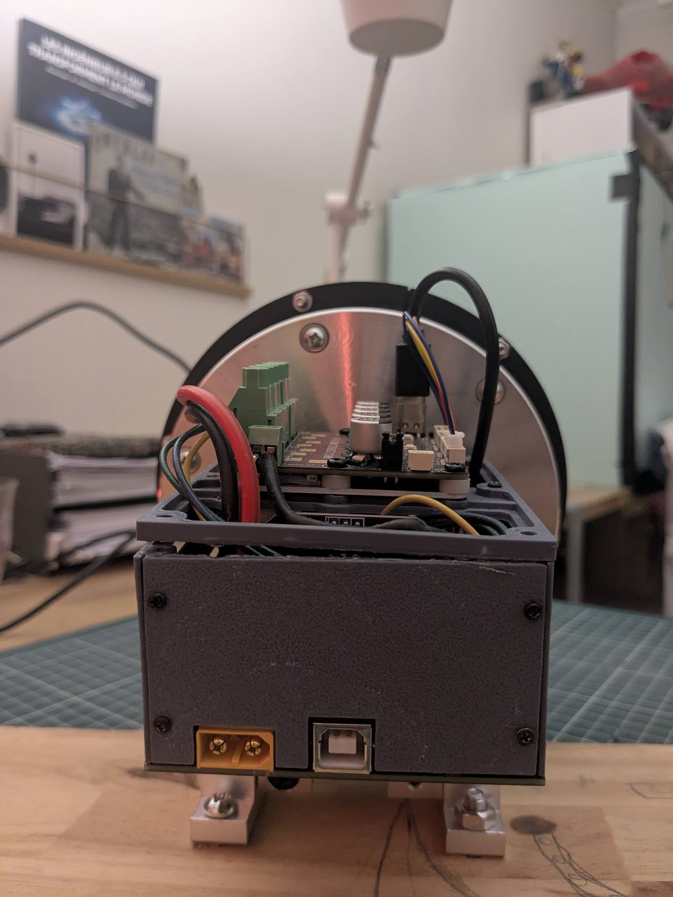

Je conçois, je fabrique, je fais voler — drones, électronique embarquée, impression 3D.I design, I build, I fly — drones, embedded electronics, 3D printing.
Étudiant ingénieur à l'ESME. Je mène mes projets de bout en bout : conception CAO sur Fusion 360, impression 3D, électronique embarquée et modélisation Python. Je travaille notamment sur le projet DUA, un drone d'urgence autonome.Engineering student at ESME. I take projects end to end: Fusion 360 CAD, 3D printing, embedded electronics and Python modelling. I'm currently working on the DUA project, an autonomous emergency drone.
contact
04 / 05
Un projet, une idée, une collaboration ? Écrivez-moi.A project, an idea, a collaboration? Get in touch.
DUA — Drone d'Urgence AutonomeAutonomous Emergency Drone
Drone d'urgence autonome conçu pour déposer un module de survie médical de 3 kg au treuil auprès d'une victime isolée, maintenir un lien audio/vidéo avec un médecin, puis rentrer seul. Dimensionnement complet par un modèle Python convergent (masse, poussée, énergie) avec 38 tests de non-régression et une visionneuse 3D WebGL.Autonomous emergency drone built to winch a 3 kg medical survival module down to an isolated casualty, hold an audio/video link with a physician, then fly home alone. Full sizing by a convergent Python model (mass, thrust, energy) with 38 regression tests and a WebGL 3D viewer.
Aile volante d'environ 2 m conçue et imprimée en 3D (filament Polylite renforcé carbone), propulsée par une turbine EDF 56 mm. Lancée depuis une plateforme montée sur une voiture radiocommandée à suspension organique optimisée par IA. Projet mené avec Gaspar Leclerc.~2 m flying wing designed and 3D-printed (Polylite filament, carbon-reinforced), powered by a 56 mm EDF. Launched from a platform mounted on an RC car with AI-optimised organic suspension. Built with Gaspar Leclerc.
CAO · Impression 3D · AéronautiqueCAD · 3D printing · Aeronautics



03 / 05
électronique / contrôle moteurelectronics / motor control
Volant à retour de forceForce-feedback wheel
Base de volant à retour de force construite autour du projet FFBeast : moteur de hoverboard piloté par une carte Odrive, volant Thrustmaster Leather 28GT dont le protocole SPI propriétaire est décodé par un ESP32-S3 puis converti en manette de jeu. Objectif : apprendre le contrôle moteur et les encodeurs magnétiques.Force-feedback wheel base built around the FFBeast project: a hoverboard motor driven by an Odrive board, with a Thrustmaster Leather 28GT wheel whose proprietary SPI protocol is decoded by an ESP32-S3 and converted into a game controller. Goal: learn motor control and magnetic encoders.
Électronique · SPI · Contrôle moteurElectronics · SPI · Motor control



04 / 05
mécanique / innovationmechanics / innovation
Switch clavier Hall Effect low-profileLow-profile Hall Effect keyboard switch
Étude d'un switch mécanique low-profile à détection Hall Effect sans contact (aimant + capteur Hall) pour réduire la hauteur des claviers sans sacrifier la précision. Conception CAO du switch, étude des tolérances, et démarche de contact auprès d'acteurs du marché des claviers mécaniques.Study of a low-profile mechanical switch with contactless Hall Effect sensing (magnet + Hall sensor) to reduce keyboard height without sacrificing precision. CAD of the switch, tolerance analysis, and outreach to mechanical-keyboard industry players.
CAO · Mécanique · InnovationCAD · Mechanics · Innovation
Site vitrine one-page pour AD3M (métallurgie & structures métalliques) : hero, à propos, galerie de réalisations, formulaire de contact.One-page showcase site for AD3M (metalwork & steel structures): hero, about, project gallery, contact form.